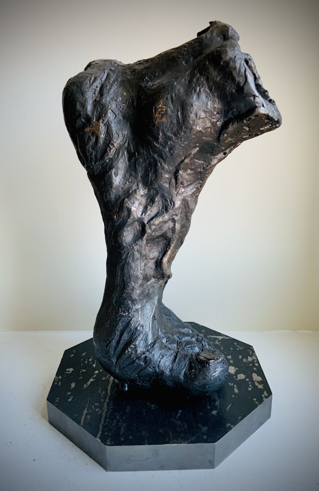

पाइतला
The project was inspired by the poem "हामी (We)" by Bhupi Serchan. The excerpt below says that we are nothing but feet. In a race, we win but the color goes to the forehead. We win but the garland goes to the neck. We win but the medal goes to the chest. With this project, I wanted to elevate the status of often neglected feet in our life and society.
हामी पाइतला हौं
हामी दौडमा प्रथम हुन्छौं
र हाम्रो निधारले टीका थाप्छ,
हामी दौडमा प्रथम हुन्छौं
र हाम्रो घाँटीले माला लाउँछ
हामी दौडमा प्रथम हुन्छौं
हाम्रो छातीले तक्मा टाँस्छ
